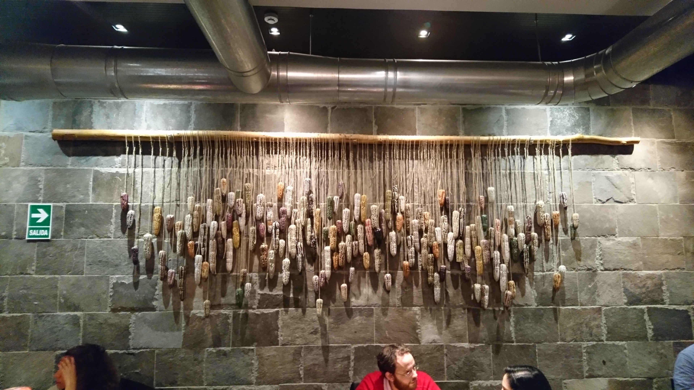
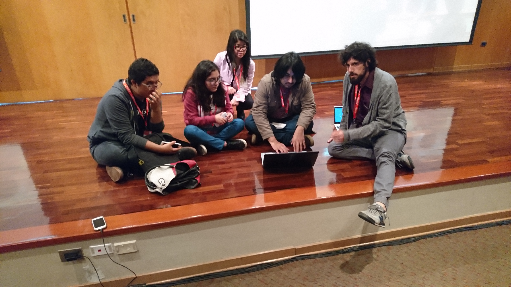

UbuConLA 2017 Summit Summary
These are my notes about UbuconLA, a bit of social activities and thoughts on the talks related to the snappy ecosystem.
Arriving
I left late on thursday for a planned night arrival into Lima, Leo was going to be arriving around 2 hours earlier than me flying in from Costa Rica.
Once the plane I was on coming from Cordoba, Argentina landed into Lima I got onto an ad-hoc telegram group we had created and mentioned that I had landed and discovered Leo was still trying to Uber out of there. I eventually cleared customs, pretty quickly given the estimate Jose had given me, and we Ubered together to meetup with Jose and Nathan.
After a couple of beers we headed to the hotel, where Leo and I checked in, only to discover that the travel agent had not made my reservation and given the hectic times when I made this booking I had not followed up to verify the booking had been made. Luckily there was still accomodation available, so I handed my credit card over with the hopes of having the agency take care of it the next day. It was getting pretty late and time for sleep was getting slimmer.
Day 1
The event took place at the University of Lima, I had been there before two years prior, and the setup was pretty similar as that previous time I was there. After clearing through the University’s security checkpoint we were in. I was queued to speak after the opening speech that Jose was to provide.
Reaching your users
My talk was all about making software, with the sole purpose of solving a problem, reach your users and your users only have a reason to install such software because they want to solve a problem. To know there is a solution to that problem we need to make it easier to connect the gap between the people developing solutions and the people needing to consume from them. This was all tied into snaps, their creation and delivery with a pipeline in mind that would be frictionless given continous delivery mechanisms in place in the snappy ecosystem.
It was well received, Leo made a comment later on that it was also one of the most viewed live youtube events we had had for anything snappy related, which gave us food for thought in the matter of starting to produce content in Spanish.
Here is the recording
No need to be a developer to contribute
Nathan spoke about contributing without being a developer and his story on how he got involved in the world of Ubuntu and how he evolved out of it into upstream projects. How to do proper hand overs and how transitioning responsibilities avoids burn outs.
Tangential to this talk, Nathan and I spent a lot of time discussing snaps, how they fit the enterprise, and some use cases for it where he works.
His talk was in English, Leo was kind enough to do a live translation to Spanish. Here’s the video.
Snapcraft workshop
Leo and me had a two hour slot to do a workshop, the setup was that of a plenary with a live stream, so we decided to create a new snap for a python project we found (shellpic) as a guide for everyone to follow. Most folks managed to catch on pretty quick. We went from git clone to installable snap, touching base on:
- parts and plugins
- how apps entries behave
- confinement and required interface plugs
- snapcraft’ store related CLI commands
- push and releasing to the store
- adding CI/CD with build.snapcraft.io
- a more complex project
- how to distribute the snap offline by means of
snap downloadfor rural areas
Here’s the video:
Evening activities
As an evening plan, the speakers were invited to a nice dinner, peruvian food flowed through the table while we conversed between us. I had a nice backdrop view of the different types of corn that grow in Perú 
Day 2
Day two was much harder given the vast amount of peruvian food we had for dinner the night before which caused certain sleep disorders; Nathan, Leo and I all decided to skip breakfast and just meet at the lobby to hop on a ride to the University where Leo was queued to talk first.
Snapcraft and the new open source communities
Leo started discussing how people would contribute to open source projects by means of contributing to Ubuntu for it to reach users in the end and how today there are mechanisms where it is so much easier to contribute to projects, specially with the coming of projects like github, travis, and build.snapcraft.io.
Internet without Internet using Ubuntu
Neyder Achahuanco talked about taking Ubuntu to rural areas and creating Intranets for villagers to use. Most of the people in the village are equiped with hardware given by the government that they have seldom used as they had no reason for it. Neyder gave a hint that they were just told how to use things instead of how to create.
There’s a plethora of software installed here and the day before we discussed making these a single snap, I wasn’t aware of exactly what this entailed but after this talk I noticed that we probably want multiple snaps and most likely base out of Ubuntu Core to have a nice reliable system that gets updated by that feature I am anxious for where snaps with assertions can be consumed by plugging in a USB stick.
Bohemian snapcrafting
We had a bit of an interval during the evening where Leo asked a couple of folks who did the snapcraft workshop the day before if they wanted to continue and explore some more, so that is exactly what they did in an ad-hoc gathering on the floor.

On the side, Nathan started adding snap support into puppet, he had a prototype working by the end of it. He might be following up on the snapcraft forums once he has something presentable.
Closing thoughts
My flight was set to leave so that I would have to depart as soon as the last session ended, so as the wrap up took place I was saying my goodbyes and left for the airport.
As I travelled to the airport my thoughts were that I had good conversations out of the event and had made some nice plans with a couple of the attendees, all related to snappy things of course, so I am glad I went. That said, I hope that the next UbuconLA takes place in a different location as I think this location ran its course, it’s been three years after all. Costa Rica seems like the perfect setup for the next event and I hope it materializes as such.
This event was interesting, a special thanks to José Antonio for putting this together!